ggpubr package
Text here is from github page of ggpubr.
ggplot2, by Hadley Wickham, is an excellent and flexible package for elegant data visualization in R. However the default generated plots requires some formatting before we can send them for publication. Furthermore, to customize a ggplot, the syntax is opaque and this raises the level of difficulty for researchers with no advanced R programming skills.
The ‘ggpubr’ package provides some easy-to-use functions for creating and customizing ‘ggplot2’- based publication ready plots.
Find out more at https://rpkgs.datanovia.com/ggpubr.
Installation and loading
- Install from CRAN as follow:
install.packages("ggpubr")- Or, install the latest version from GitHub as follow:
# Install
if(!require(devtools)) install.packages("devtools")
devtools::install_github("kassambara/ggpubr")Distribution
library(ggpubr)
# Create some data format
# :::::::::::::::::::::::::::::::::::::::::::::::::::
set.seed(1234)
wdata = data.frame(
sex = factor(rep(c("F", "M"), each=200)),
weight = c(rnorm(200, 55), rnorm(200, 58)))
head(wdata, 4)## sex weight
## 1 F 53.8
## 2 F 55.3
## 3 F 56.1
## 4 F 52.7# Density plot with mean lines and marginal rug
# :::::::::::::::::::::::::::::::::::::::::::::::::::
# Change outline and fill colors by groups ("sex")
# Use custom palette
ggdensity(wdata, x = "weight",
add = "mean", rug = TRUE,
color = "sex", fill = "sex",
palette = c("#00AFBB", "#E7B800"))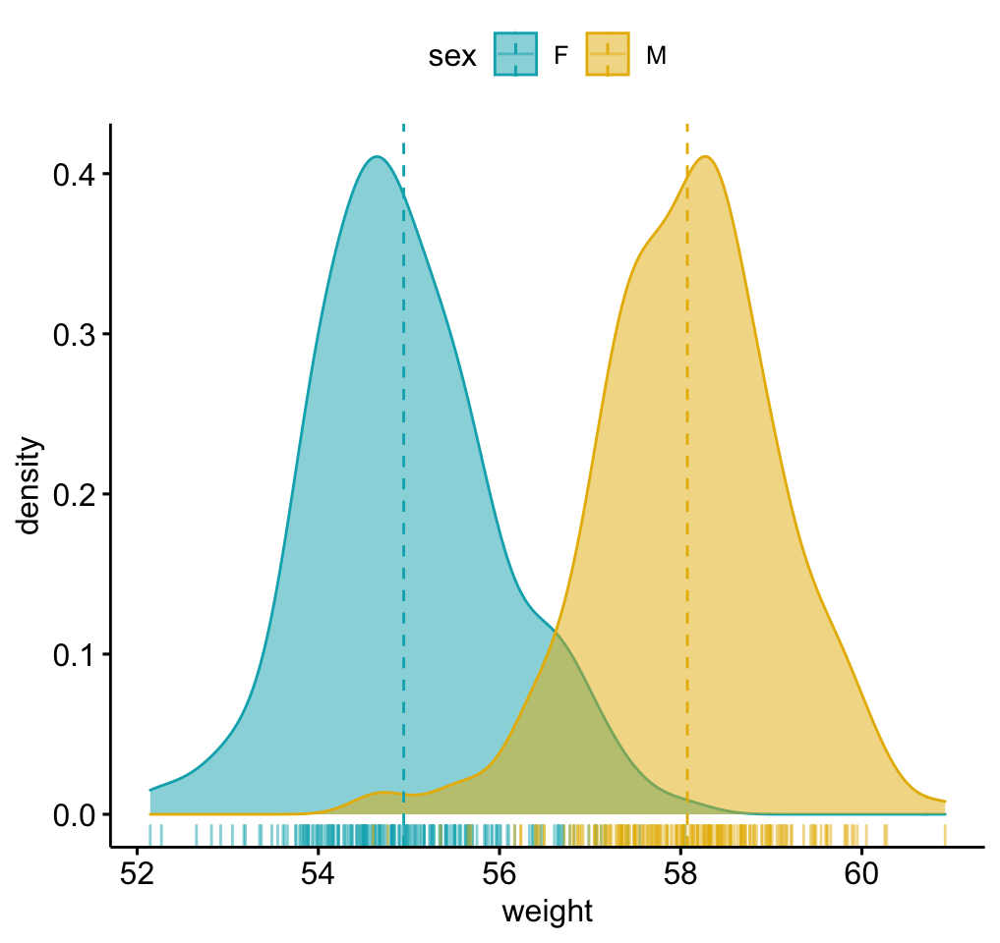
# Histogram plot with mean lines and marginal rug
# :::::::::::::::::::::::::::::::::::::::::::::::::::
# Change outline and fill colors by groups ("sex")
# Use custom color palette
gghistogram(wdata, x = "weight",
add = "mean", rug = TRUE,
color = "sex", fill = "sex",
palette = c("#00AFBB", "#E7B800"))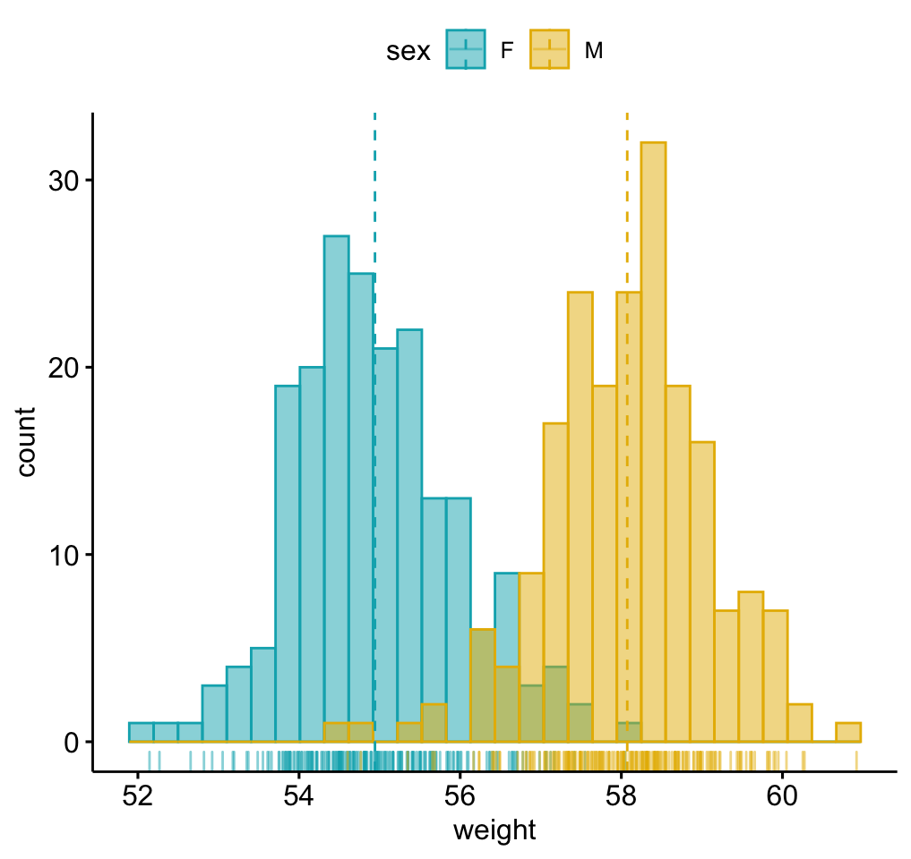
Box plots and violin plots
# Load data
data("ToothGrowth")
df <- ToothGrowth
head(df, 4)## len supp dose
## 1 4.2 VC 0.5
## 2 11.5 VC 0.5
## 3 7.3 VC 0.5
## 4 5.8 VC 0.5# Box plots with jittered points
# :::::::::::::::::::::::::::::::::::::::::::::::::::
# Change outline colors by groups: dose
# Use custom color palette
# Add jitter points and change the shape by groups
p <- ggboxplot(df, x = "dose", y = "len",
color = "dose", palette =c("#00AFBB", "#E7B800", "#FC4E07"),
add = "jitter", shape = "dose")
p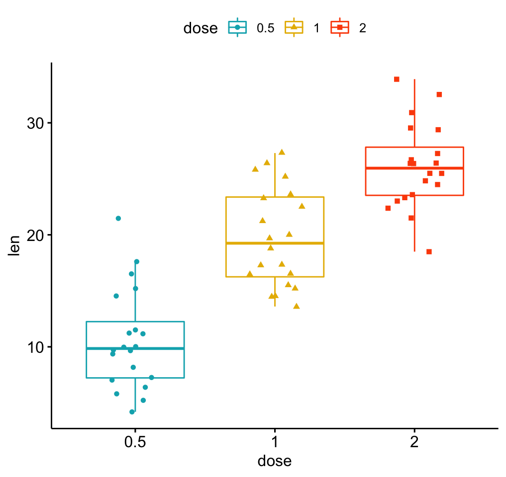
# Add p-values comparing groups
# Specify the comparisons you want
my_comparisons <- list( c("0.5", "1"), c("1", "2"), c("0.5", "2") )
p + stat_compare_means(comparisons = my_comparisons)+ # Add pairwise comparisons p-value
stat_compare_means(label.y = 50) # Add global p-value## Warning in wilcox.test.default(c(4.2, 11.5, 7.3, 5.8, 6.4, 10, 11.2, 11.2, :
## cannot compute exact p-value with ties## Warning in wilcox.test.default(c(4.2, 11.5, 7.3, 5.8, 6.4, 10, 11.2, 11.2, :
## cannot compute exact p-value with ties## Warning in wilcox.test.default(c(16.5, 16.5, 15.2, 17.3, 22.5, 17.3, 13.6, :
## cannot compute exact p-value with ties
# Violin plots with box plots inside
# :::::::::::::::::::::::::::::::::::::::::::::::::::
# Change fill color by groups: dose
# add boxplot with white fill color
ggviolin(df, x = "dose", y = "len", fill = "dose",
palette = c("#00AFBB", "#E7B800", "#FC4E07"),
add = "boxplot", add.params = list(fill = "white"))+
stat_compare_means(comparisons = my_comparisons, label = "p.signif")+ # Add significance levels
stat_compare_means(label.y = 50) # Add global the p-value ## Warning in wilcox.test.default(c(4.2, 11.5, 7.3, 5.8, 6.4, 10, 11.2, 11.2, :
## cannot compute exact p-value with ties## Warning in wilcox.test.default(c(4.2, 11.5, 7.3, 5.8, 6.4, 10, 11.2, 11.2, :
## cannot compute exact p-value with ties## Warning in wilcox.test.default(c(16.5, 16.5, 15.2, 17.3, 22.5, 17.3, 13.6, :
## cannot compute exact p-value with ties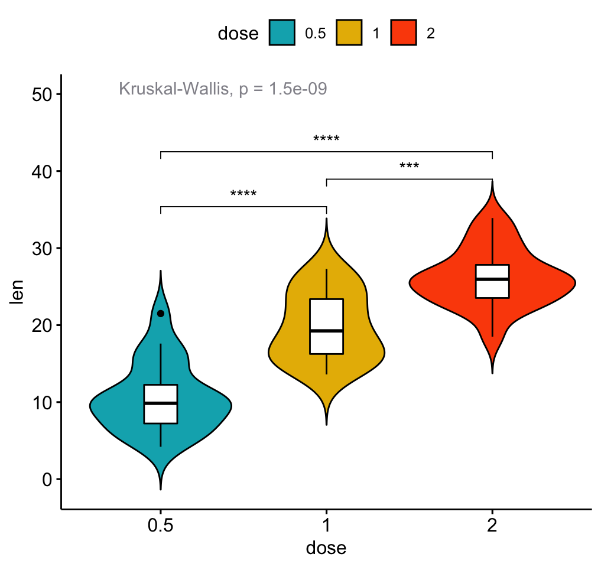
Bar plots
Demo data set
Load and prepare data:
# Load data
data("mtcars")
dfm <- mtcars
# Convert the cyl variable to a factor
dfm$cyl <- as.factor(dfm$cyl)
# Add the name colums
dfm$name <- rownames(dfm)
# Inspect the data
head(dfm[, c("name", "wt", "mpg", "cyl")])## name wt mpg cyl
## Mazda RX4 Mazda RX4 2.62 21.0 6
## Mazda RX4 Wag Mazda RX4 Wag 2.88 21.0 6
## Datsun 710 Datsun 710 2.32 22.8 4
## Hornet 4 Drive Hornet 4 Drive 3.21 21.4 6
## Hornet Sportabout Hornet Sportabout 3.44 18.7 8
## Valiant Valiant 3.46 18.1 6Ordered bar plots
Change the fill color by the grouping variable “cyl”. Sorting will be done globally, but not by groups.
ggbarplot(dfm, x = "name", y = "mpg",
fill = "cyl", # change fill color by cyl
color = "white", # Set bar border colors to white
palette = "jco", # jco journal color palett. see ?ggpar
sort.val = "desc", # Sort the value in dscending order
sort.by.groups = FALSE, # Don't sort inside each group
x.text.angle = 90 # Rotate vertically x axis texts
)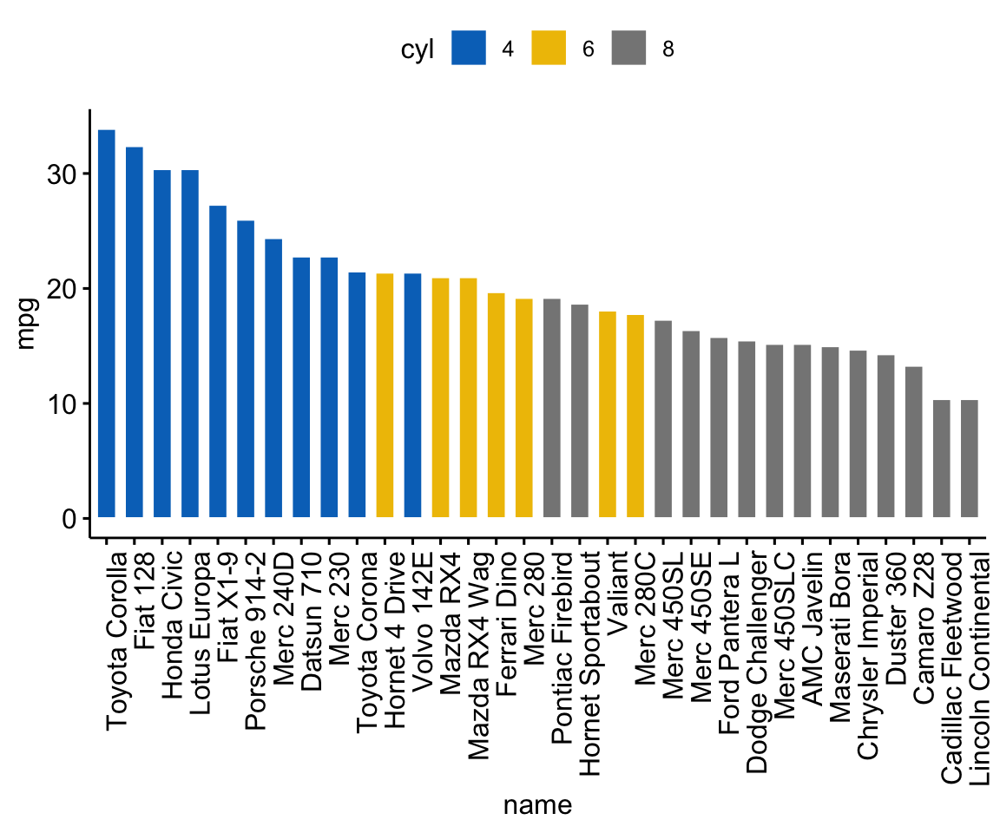
Sort bars inside each group. Use the argument sort.by.groups = TRUE.
ggbarplot(dfm, x = "name", y = "mpg",
fill = "cyl", # change fill color by cyl
color = "white", # Set bar border colors to white
palette = "jco", # jco journal color palett. see ?ggpar
sort.val = "asc", # Sort the value in dscending order
sort.by.groups = TRUE, # Sort inside each group
x.text.angle = 90 # Rotate vertically x axis texts
)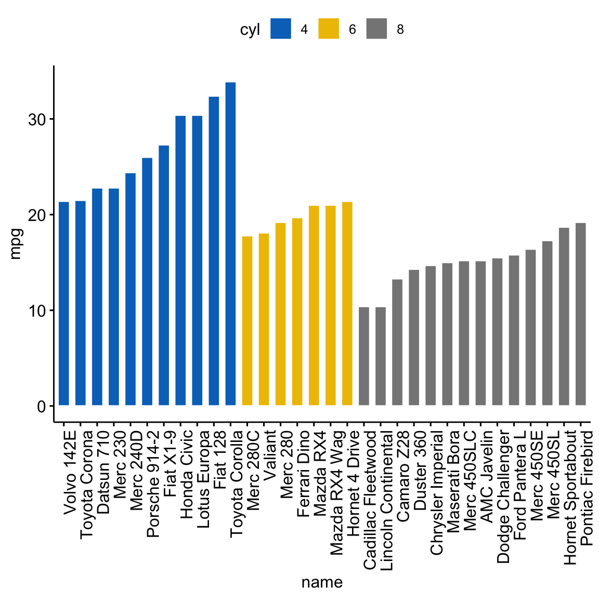
Deviation graphs
The deviation graph shows the deviation of quantitatives values to a reference value. In the R code below, we’ll plot the mpg z-score from the mtcars dataset.
Calculate the z-score of the mpg data:
# Calculate the z-score of the mpg data
dfm$mpg_z <- (dfm$mpg -mean(dfm$mpg))/sd(dfm$mpg)
dfm$mpg_grp <- factor(ifelse(dfm$mpg_z < 0, "low", "high"),
levels = c("low", "high"))
# Inspect the data
head(dfm[, c("name", "wt", "mpg", "mpg_z", "mpg_grp", "cyl")])## name wt mpg mpg_z mpg_grp cyl
## Mazda RX4 Mazda RX4 2.62 21.0 0.151 high 6
## Mazda RX4 Wag Mazda RX4 Wag 2.88 21.0 0.151 high 6
## Datsun 710 Datsun 710 2.32 22.8 0.450 high 4
## Hornet 4 Drive Hornet 4 Drive 3.21 21.4 0.217 high 6
## Hornet Sportabout Hornet Sportabout 3.44 18.7 -0.231 low 8
## Valiant Valiant 3.46 18.1 -0.330 low 6Create an ordered barplot, colored according to the level of mpg:
ggbarplot(dfm, x = "name", y = "mpg_z",
fill = "mpg_grp", # change fill color by mpg_level
color = "white", # Set bar border colors to white
palette = "jco", # jco journal color palett. see ?ggpar
sort.val = "asc", # Sort the value in ascending order
sort.by.groups = FALSE, # Don't sort inside each group
x.text.angle = 90, # Rotate vertically x axis texts
ylab = "MPG z-score",
xlab = FALSE,
legend.title = "MPG Group"
)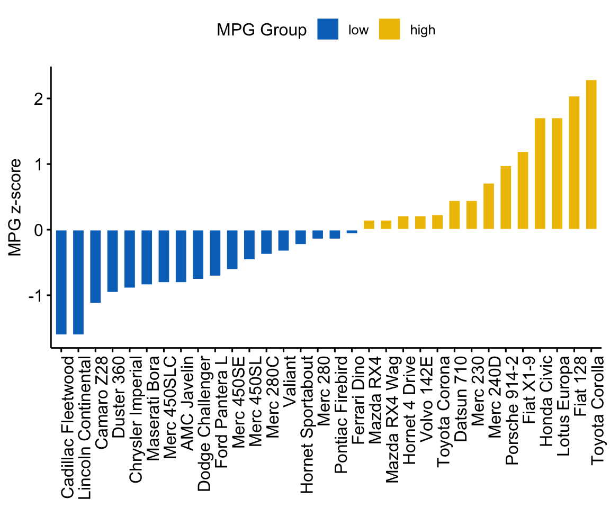
Rotate the plot: use rotate = TRUE and sort.val = “desc”
ggbarplot(dfm, x = "name", y = "mpg_z",
fill = "mpg_grp", # change fill color by mpg_level
color = "white", # Set bar border colors to white
palette = "jco", # jco journal color palett. see ?ggpar
sort.val = "desc", # Sort the value in descending order
sort.by.groups = FALSE, # Don't sort inside each group
x.text.angle = 90, # Rotate vertically x axis texts
ylab = "MPG z-score",
legend.title = "MPG Group",
rotate = TRUE,
ggtheme = theme_minimal()
)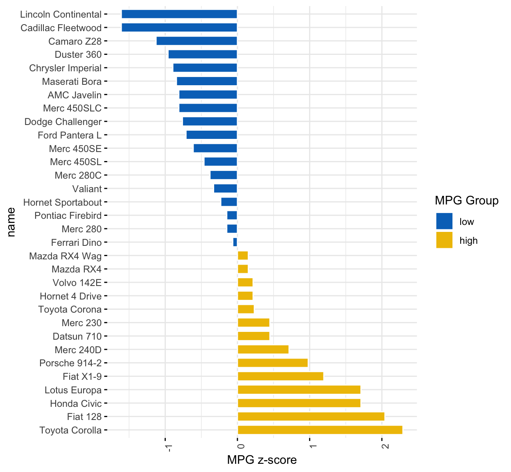
Dot charts
Lollipop chart
Lollipop chart is an alternative to bar plots, when you have a large set of values to visualize.
Lollipop chart colored by the grouping variable “cyl”:
ggdotchart(dfm, x = "name", y = "mpg",
color = "cyl", # Color by groups
palette = c("#00AFBB", "#E7B800", "#FC4E07"), # Custom color palette
sorting = "ascending", # Sort value in descending order
add = "segments", # Add segments from y = 0 to dots
ggtheme = theme_pubr() # ggplot2 theme
)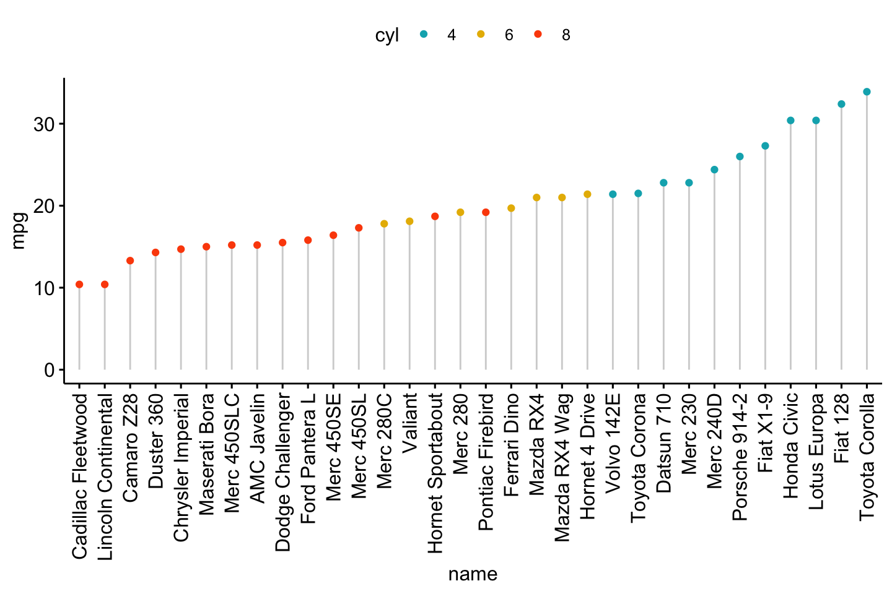
- Sort in decending order. sorting = “descending”.
- Rotate the plot vertically, using rotate = TRUE.
- Sort the mpg value inside each group by using group = “cyl”.
- Set dot.size to 6.
- Add mpg values as label. label = “mpg” or label = round(dfm$mpg).
ggdotchart(dfm, x = "name", y = "mpg",
color = "cyl", # Color by groups
palette = c("#00AFBB", "#E7B800", "#FC4E07"), # Custom color palette
sorting = "descending", # Sort value in descending order
add = "segments", # Add segments from y = 0 to dots
rotate = TRUE, # Rotate vertically
group = "cyl", # Order by groups
dot.size = 6, # Large dot size
label = round(dfm$mpg), # Add mpg values as dot labels
font.label = list(color = "white", size = 9,
vjust = 0.5), # Adjust label parameters
ggtheme = theme_pubr() # ggplot2 theme
)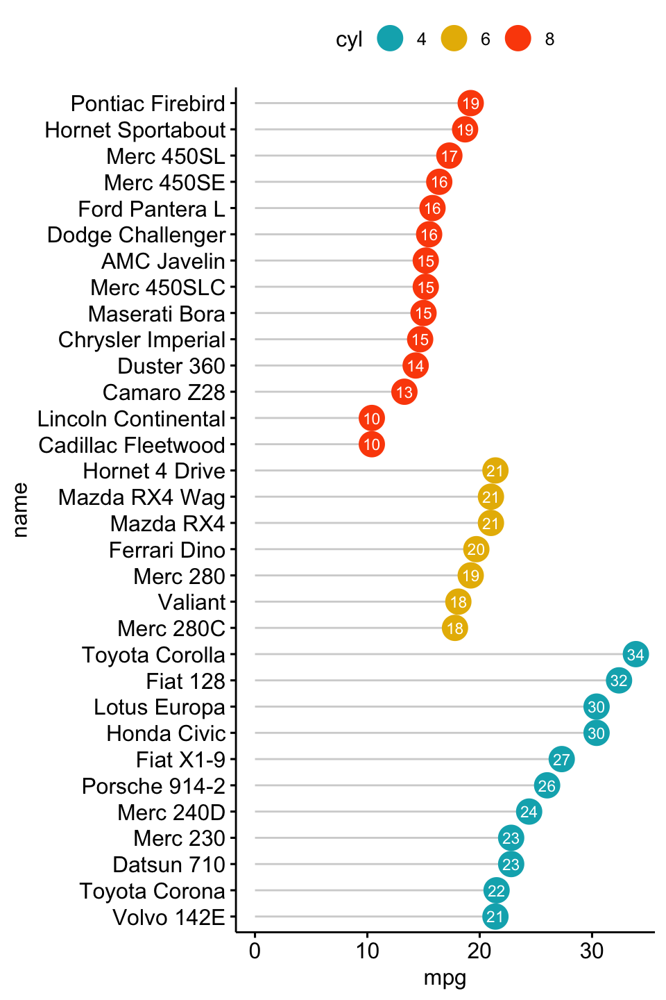
Deviation graph:
- Use y = “mpg_z”
- Change segment color and size: add.params = list(color = “lightgray”, size = 2)
ggdotchart(dfm, x = "name", y = "mpg_z",
color = "cyl", # Color by groups
palette = c("#00AFBB", "#E7B800", "#FC4E07"), # Custom color palette
sorting = "descending", # Sort value in descending order
add = "segments", # Add segments from y = 0 to dots
add.params = list(color = "lightgray", size = 2), # Change segment color and size
group = "cyl", # Order by groups
dot.size = 6, # Large dot size
label = round(dfm$mpg_z,1), # Add mpg values as dot labels
font.label = list(color = "white", size = 9,
vjust = 0.5), # Adjust label parameters
ggtheme = theme_pubr() # ggplot2 theme
)+
geom_hline(yintercept = 0, linetype = 2, color = "lightgray")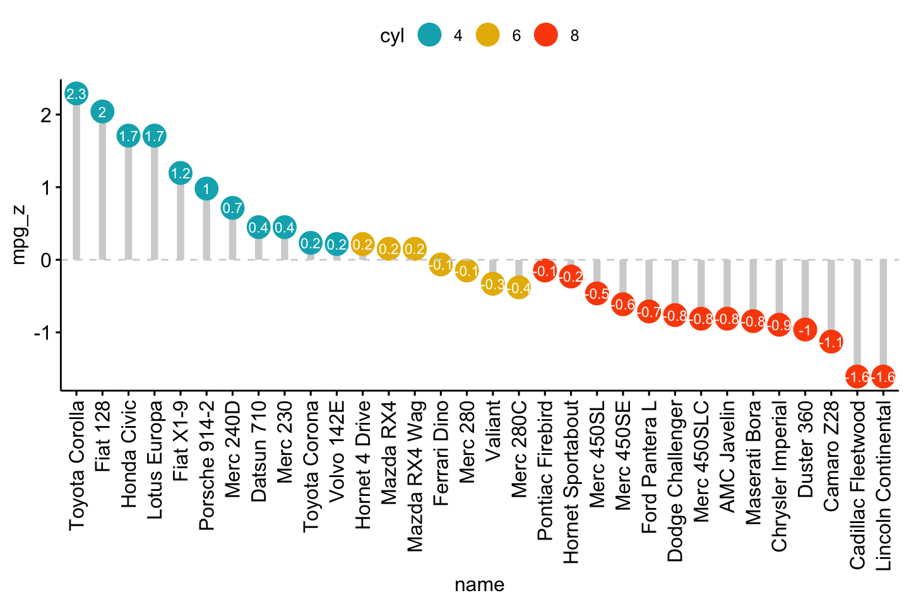
Cleveland’s dot plot
Color y text by groups. Use y.text.col = TRUE.
ggdotchart(dfm, x = "name", y = "mpg",
color = "cyl", # Color by groups
palette = c("#00AFBB", "#E7B800", "#FC4E07"), # Custom color palette
sorting = "descending", # Sort value in descending order
rotate = TRUE, # Rotate vertically
dot.size = 2, # Large dot size
y.text.col = TRUE, # Color y text by groups
ggtheme = theme_pubr() # ggplot2 theme
)+
theme_cleveland() # Add dashed grids## Warning: Vectorized input to `element_text()` is not officially supported.
## Results may be unexpected or may change in future versions of ggplot2.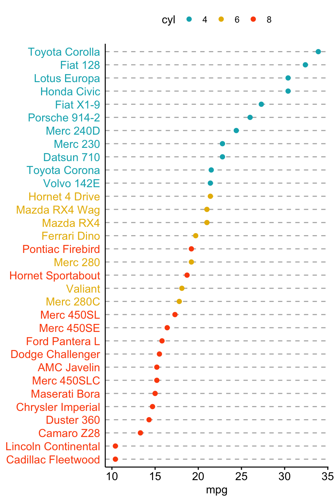
More
Find out more at https://rpkgs.datanovia.com/ggpubr.